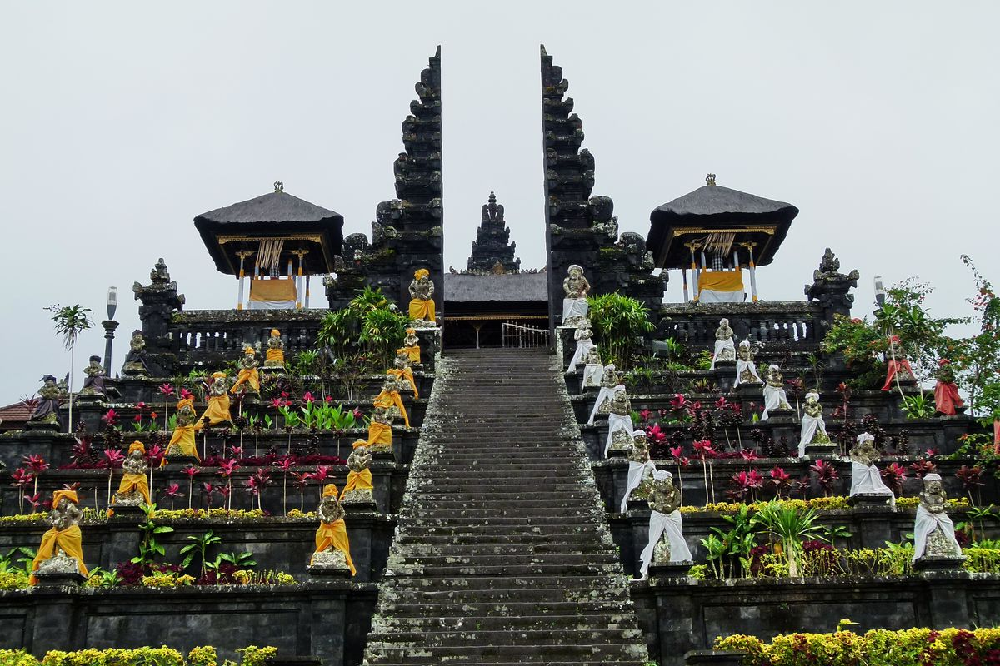
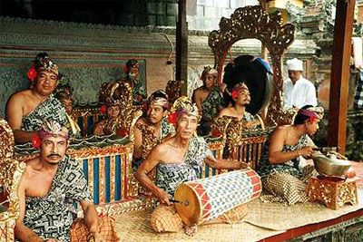

.jpeg)
🌺 WARISAN NUSANTARA
Mengenal Kekayaan
Budaya Bali yang Agung
Jelajahi keindahan seni, tradisi, dan kearifan lokal Pulau Dewata yang telah diwariskan selama berabad-abad.
Jelajahi Sekarang✦ Tentang Kami
Menyelami Jiwa Budaya Bali
Sudah Terdaftar? Masuk untuk pengalaman lebih
✦ Kategori Wisata
Pilih Paket Eksplorasi Budaya
Temukan pengalaman budaya Bali yang paling sesuai dengan minat dan kebutuhan Anda, dari ritual sakral hingga kesenian kontemporer.
Tari Kecak
Tarian kolosal tanpa iringan gamelan, mengisahkan epik Ramayana.Gratis Akses
Ngaben
Upacara kremasi suci sebagai prosesi pelepasan roh menuju alam baka.Premium Panduan
Eksplorasi Total
Akses penuh semua konten budaya, seni, dan wisata spiritual Bali.All-in-One
Ukiran Kayu
Seni ukir Bali yang telah diwariskan turun-temurun dengan motif khas.Workshop Tersedia

🌺 BERGABUNG BERSAMA KAMI
Jadilah Bagian dari Pelestarian Budaya Bali yang Autentik
Bergabunglah dengan ribuan pecinta budaya dan bantu melestarikan warisan leluhur Bali agar tetap hidup bagi generasi mendatang.

✦ Spiritual
Pura: Pusat Kehidupan Spiritual Masyarakat Bali
Pura adalah jantung kehidupan spiritual orang Bali. Ribuan pura tersebar di seluruh pulau, dari Pura Besakih yang megah di lereng Gunung Agung hingga pura-pura kecil di sudut desa, menjadi tempat persembahan dan pemujaan kepada Sang Hyang Widhi.

✦ Musik
Gamelan Bali: Harmoni dari Perunggu dan Bambu
Gamelan Bali adalah ansambel musik tradisional yang memadukan instrumen perunggu, bambu, dan kulit. Suaranya yang khas menjadi jiwa dari setiap upacara dan pertunjukan seni, menciptakan trance magis yang menghubungkan manusia dengan alam semesta.
✦ Kerajinan
Tenun Endek: Kain Sakral Penuh Makna
Tenun Endek adalah kain tradisional Bali dengan motif khas yang kaya simbolisme. Setiap corak menceritakan kisah mitologi atau filosofi Hindu Bali. Kini, Endek telah mendunia dan diakui UNESCO sebagai warisan budaya tak benda yang patut dilestarikan.
✦ Suara Mereka
Kata Para Penjelajah Budaya

Dewi Ayu Lestari
Peneliti Seni Pertunjukan
I Wayan Dharma
Pemangku Adat Ubud
✦ Pertanyaan Umum